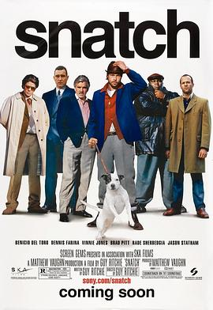

偷拐抢骗 / Snatch
又名：边个够我姜(港) / 掠夺 / 贪得无厌 / 偷蒙拐骗
从《绅士们》到《偷拐抢骗》，可能到以后的《两杆大烟枪》，盖里奇才会越来越好吧。
作品信息
| 导演 | 盖·里奇 |
| 编剧 | 盖·里奇 |
| 主演 | 本尼西奥·德尔·托罗 / 丹尼斯·法里纳 / 维尼·琼斯 / 布拉德·皮特 / 拉德·舍尔贝季亚 / 杰森·斯坦森 / 阿兰·福德 / 迈克·里德 / 罗比·基 / 连尼·詹姆斯 / 艾文·布莱纳 / 杰森·弗莱明 / 威廉·贝克 / 安迪·比克维奇 / 查尔斯·科克 / 索查·库萨克 / 山姆·道格拉斯 / 亚当·弗格蒂 / 戈尔迪 / 斯蒂芬·格拉汉姆 / 大卫·勒格诺 / 维利贝·托皮奇 / 利亚姆·麦克马洪 / 詹姆斯·沃伦 / 奧斯汀·德瑞奇 / 迪安·巴彻勒 / 索尔·坎贝尔 / 汤姆·德尔玛 / 克里斯托弗·福什 / 盖·里奇 / 彼得·雷尼克 / 克里斯·斯普鲁斯 |
| 类型 | 喜剧 / 犯罪 |
| 制片国家/地区 | 英国 / 美国 |
| 语言 | 英语 / 俄语 |
| 上映日期 | 2000-09-01 |
| 片长 | 104分钟 |
| IMDb | tt0208092 |
说过什么
2023-03-11 22:32:03
广播 · 看过 · ★★★★★
从《绅士们》到《偷拐抢骗》，可能到以后的《两杆大烟枪》，盖里奇才会越来越好吧。
最后一次看到是 2026-10-07T23:13:56+08:00 · 豆瓣原页